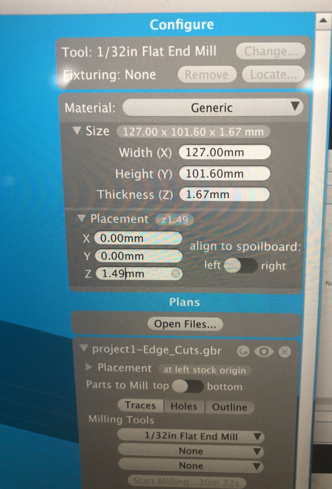
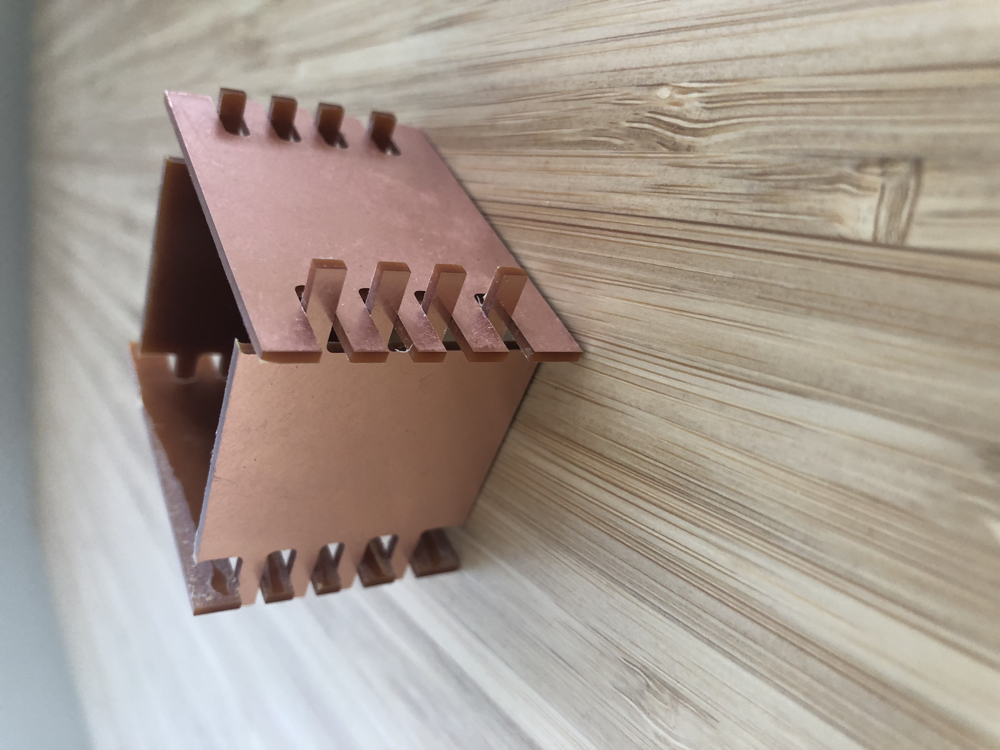

Julie's Assignment 6!
Here is all the documentation for assignment 5!
My strategy for the design was to create a simple box with cutouts. I did some light sketching and then transitioned to OnShape

Phase 2: Printing
I choose to design the sides of the cube first (which I regret not dseigning the top and bottom lid at the same time), however due to time contraints on Monday, it made the most sense to do the sidees.
I exported OnShape to a DXF, uploaded to Kicad, exported from Kicad and imported into Bantam.
Printer settings:



See Onshape link for laser elements here
Credits: Thanks to Kim, Kellie, Cindy and Ping for support on Monday evening.